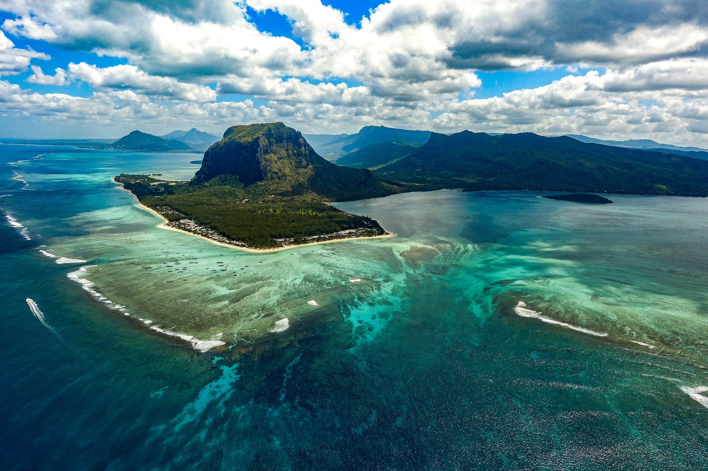
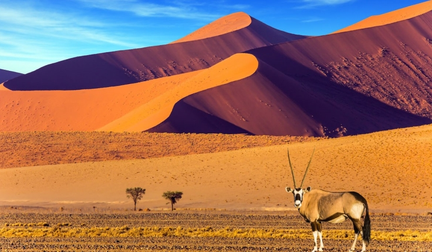
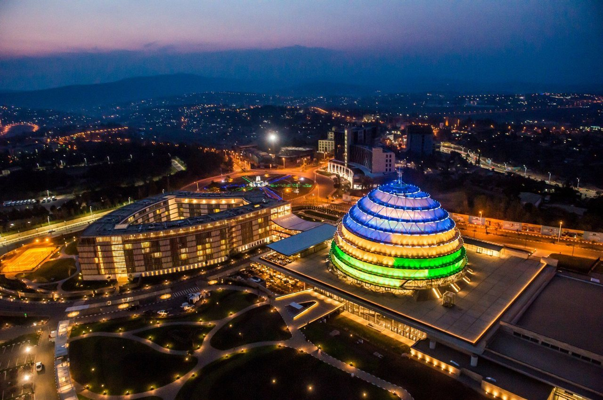
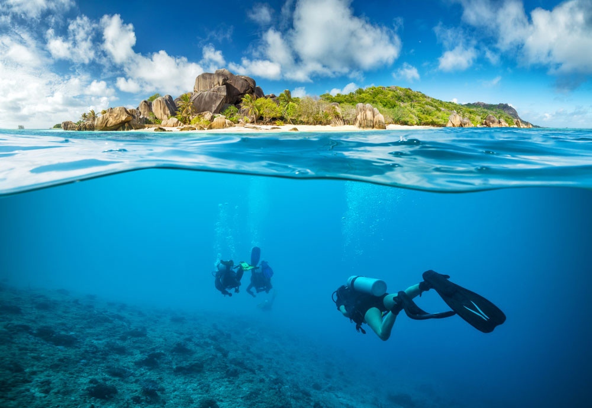
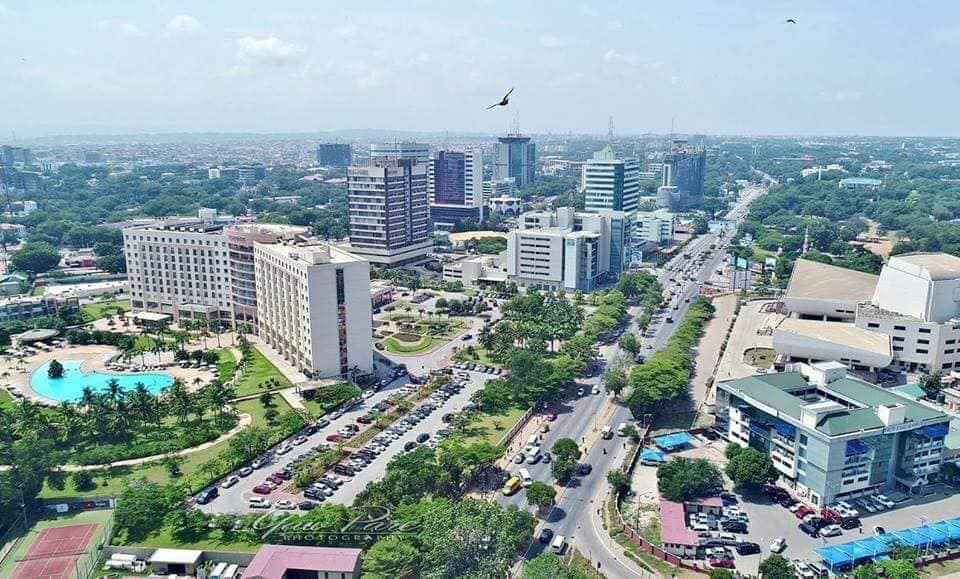
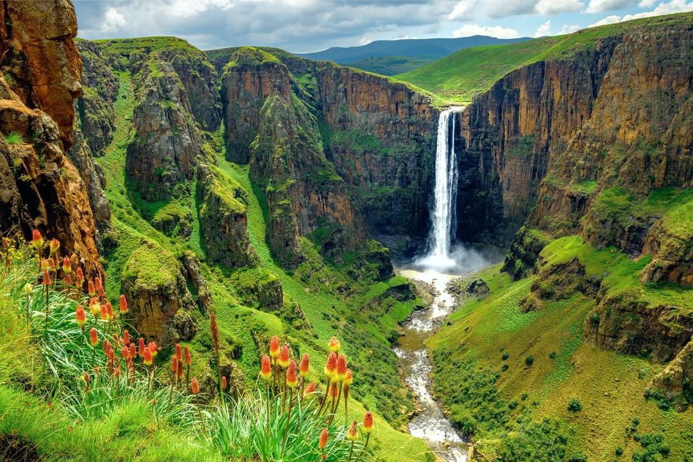
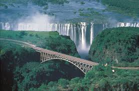

Top 10 Safest Countries in Africa: Your Ultimate Guide to Secure and Unforgettable Travel Destinations
When planning a trip to Africa, one of the first concerns for travelers is safety. With over 50 countries across a vast continent, Africa offers stunning natural beauty, diverse cultures, and unforgettable adventures. If you’re wondering, "Which country in Africa has the least crime?" or "What country is the safest in Africa?", this guide will help you discover the Top 10 Safest Countries in Africa, where you can explore with confidence. Each country is highlighted with key details such as population, capital, official languages, and a glimpse into their history, ensuring you have all the information you need for a secure and enriching travel experience.
1. Mauritius: A Tropical Safe Haven
- Population: ~1.3 million
- Capital: Port Louis
- Official Languages: English, French
- History: Mauritius was first settled by the Dutch in the 17th century, but it was the French and later the British who shaped much of its colonial history. The country gained independence in 1968 and has since been a model of political stability and economic growth in Africa.

Mauritius is an island paradise known for its luxurious resorts, beautiful beaches, and low crime rates. This peaceful country is consistently ranked among the safest destinations in Africa, with a reputation for well-organized tourism.
Why Mauritius is Safe:
- Low Crime Rates: Violent crime is rare, and petty theft is uncommon. Travelers can feel safe exploring the vibrant streets of Port Louis or relaxing at the island’s resorts.
- Political Stability: Mauritius boasts a long history of peaceful democratic governance, contributing to a calm and secure environment.
- High-Quality Healthcare: Mauritius has excellent healthcare services, with well-trained professionals and modern facilities.
Whether you're looking to explore its pristine beaches or experience the unique culture, Mauritius offers a secure environment for travelers.
2. Botswana: A Safari Lover’s Safe Haven
- Population: ~2.6 million
- Capital: Gaborone
- Official Language: English
- History: Botswana, formerly the British protectorate of the Bechuanaland, gained independence in 1966. Since then, it has become one of Africa's most stable democracies with a reputation for good governance and economic growth.
Botswana is famous for its wildlife, luxurious safaris, and political stability. It is one of the safest countries in Southern Africa, known for its rich culture, vast wilderness, and low crime rates.
Why Botswana is Safe:
- Low Crime Rates: Botswana has one of the lowest crime rates in Africa. The country’s peaceful nature reserves and controlled tourism activities make it a top destination for secure safaris.
- Political Stability: Botswana has enjoyed uninterrupted democratic leadership, ensuring a stable environment for its citizens and visitors alike.
- Well-Regulated Tourism Industry: Botswana’s emphasis on eco-tourism means it provides safe and responsible travel experiences for adventurers.
Explore the Okavango Delta or witness the migration of elephants in Chobe National Park—all in a secure setting.
3. Namibia: Adventure in a Secure Setting
- Population: ~2.5 million
- Capital: Windhoek
- Official Language: English
- History: Namibia gained independence from South Africa in 1990, following a long period of colonial and apartheid rule. Since independence, Namibia has built a reputation for political stability, environmental conservation, and a strong economy.

Namibia offers some of the most striking landscapes in Africa, including the Sossusvlei dunes and the Etosha National Park. It is not only known for its natural beauty but also for its safety and peaceful atmosphere.
Why Namibia is Safe:
- Low Crime Levels: Namibia’s crime rate is significantly lower compared to many African nations, and it is considered one of the safest countries in Southern Africa for tourists.
- Stable Governance: Namibia’s democratic political system has contributed to its peaceful environment, and its government works diligently to maintain law and order.
- Adventure Tourism: Whether you’re hiking the Sossusvlei dunes or embarking on a safari, Namibia’s adventure tourism sector is both safe and exhilarating.
If you're looking for a secure destination to explore dramatic desert landscapes and abundant wildlife, Namibia is an excellent choice.
4. Rwanda: Peaceful and Prosperous
- Population: ~13.1 million
- Capital: Kigali
- Official Language: Kinyarwanda, French, English
- History: Rwanda’s history has been shaped by a tragic past, including the 1994 genocide. However, the country has undergone a remarkable transformation since then, focusing on unity, reconciliation, and economic development.

Rwanda, often called the “Land of a Thousand Hills,” is not only one of Africa’s most beautiful countries but also one of its safest, particularly for travelers interested in safaris and cultural experiences.
Why Rwanda is Safe:
- Minimal Crime: Rwanda enjoys one of the lowest crime rates in Africa, with a particular emphasis on peaceful urban areas such as Kigali.
- Post-Genocide Recovery: The country’s commitment to unity and peacebuilding has made it a stable and welcoming place for both residents and visitors.
- Strict Law Enforcement: Rwanda is known for its clean streets, orderly cities, and commitment to tourist safety.
Rwanda offers both stunning natural beauty, including gorilla trekking in Volcanoes National Park, and a safe environment for travel.
5. Seychelles: Secure Island Bliss
- Population: ~98,000
- Capital: Victoria
- Official Language: English, French, Seychellois Creole
- History: Seychelles, a small group of islands in the Indian Ocean, was uninhabited until the French arrived in the 18th century. It was subsequently colonized by the British before gaining independence in 1976.

The Seychelles is one of Africa's top luxury destinations. It is also recognized for its low crime rates, breathtaking beaches, and high standards of hospitality.
Why Seychelles is Safe:
- Low Crime Rate: Crime in Seychelles is minimal, and violent crime is extremely rare. Petty theft does occur in busy tourist areas but can be easily avoided.
- Political Stability: Seychelles enjoys political peace and is committed to maintaining a stable environment for its citizens and visitors.
- Tourism Security: The country’s tourism infrastructure is well-developed and secure, with many travelers enjoying private beach resorts and secure excursions.
Whether you want to enjoy serene beaches, explore coral reefs, or relax in luxury, Seychelles guarantees both beauty and safety.
6. Ghana: A Friendly and Safe Destination
- Population: ~32.8 million
- Capital: Accra
- Official Language: English
- History: Ghana was the first sub-Saharan African country to gain independence from colonial rule in 1957. Its rich cultural heritage and stable political environment have made it a leader in West Africa.

Ghana is not only known for its historical significance but also for its friendly locals, safe cities, and welcoming environment for tourists.
Why Ghana is Safe:
- Low Crime Rate: Ghana is one of the safest countries in West Africa, with violent crime being relatively rare, especially in popular tourist areas like Accra.
- Stable Political System: Ghana has a strong democratic tradition with peaceful elections and transitions of power.
- Warm Hospitality: Ghanaians are known for their kindness, making it an ideal destination for first-time visitors to Africa.
Whether you're exploring the Cape Coast Castle or wandering through Accra’s markets, Ghana offers a safe and enriching experience.
7. Cape Verde: A Safe Island Retreat
- Population: ~531,000
- Capital: Praia
- Official Language: Portuguese
- History: Cape Verde was uninhabited until Portuguese explorers discovered it in the 15th century. The islands became a key trading post before gaining independence from Portugal in 1975.
.webp)
Known for its idyllic islands, rich culture, and safe atmosphere, Cape Verde is a hidden gem for travelers looking for both relaxation and adventure.
Why Cape Verde is Safe:
- Low Crime Rate: With minimal violent crime, Cape Verde is a safe destination for travelers. Petty theft can occur in crowded areas but is easy to avoid.
- Stable Political System: Cape Verde has enjoyed long-term political stability, making it a peaceful place for tourism.
- Well-Developed Tourism Industry: The islands are well equipped with secure accommodations, beaches, and cultural tours
Enjoy the tranquility of Santa Maria or take in the island’s vibrant music scene, all in a safe and welcoming environment.
8. Lesotho: Adventure and Peace in the Mountains
- Population: ~2.1 million
- Capital: Maseru
- Official Language: Sesotho, English
- History: Lesotho is a small, landlocked country entirely surrounded by South Africa. It has a unique history as a sovereign kingdom in Southern Africa. Lesotho gained independence in 1966.

Lesotho is perfect for travelers seeking a safe, mountainous adventure. With low crime rates and warm hospitality, it is a hidden gem for those looking for both beauty and security.
Why Lesotho is Safe:
- Low Crime Rate: Lesotho experiences very little crime, particularly in rural areas, where most tourists engage in outdoor activities.
- Stable Political System: The country enjoys political stability despite occasional internal tensions.
- Outdoor Activities: Lesotho offers safe hiking, trekking, and horseback riding tours in the dramatic mountains.
Explore Thabana Ntlenyana, Africa's highest peak, or enjoy the peaceful Sani Pass—all within a secure environment.
9. Togo: Safe and Authentic West Africa
- Population: ~8.6 million
- Capital: Lomé
- Official Language: French
- History:Togo was a German colony in the 19th century before becoming a French mandate and eventually gaining independence in 1960.

Togo is a safe destination for those interested in authentic African experiences. With its low crime rates and welcoming atmosphere, Togo offers rich cultural heritage and natural beauty.
Why Togo is Safe:
- Low Crime Rate: Violent crime is rare in Togo, and while petty theft can occur, it’s easily avoidable.
- Stable Political System: The country has experienced political stability and a strong commitment to maintaining peace.
- Warm Locals: Togolese people are known for their hospitality, making it a wonderful place for travelers.
Explore the beaches of Lomé or visit the mountainous regions in a secure and peaceful environment.
10. Zambia: A Land of Natural Beauty and Safety
- Population: ~19.7 million
- Capital: Lusaka
- Official Language: English
- History: Zambia gained independence from Britain in 1964 and has since become known for its peaceful political environment, rich wildlife, and vast national parks.

Zambia is not just famous for Victoria Falls—it’s also recognized as one of Africa’s safest countries for travelers.
Why Zambia is Safe:
- Low Crime Rate: Zambia enjoys low crime rates, and violent crime is rare, especially in popular tourist areas.
- Stable Political System: The country has a stable democratic system and is dedicated to maintaining peace and safety.
- Thriving Eco-Tourism: Zambia offers secure safaris and wildlife experiences in South Luangwa and Kafue National Park.
How We Selected the Safest Countries in Africa: Our Methodology for Choosing Secure Travel Destinations
When curating this list of the safest countries in Africa, we took a comprehensive and methodical approach to ensure that the information provided is accurate, reliable, and beneficial for travelers. We understand that safety is one of the top priorities for any trip, especially when traveling to a continent as diverse as Africa. Below, we break down the key factors and criteria that guided our selection of these top 10 safest African countries.
1. Crime Rates and Public Safety
The most crucial factor in determining safety is the crime rate within a country. We relied on data from global crime and safety reports, including sources like the Global Peace Index, World Bank, and local government agencies, to identify countries with low crime rates—both violent and petty crimes. Countries with high rates of violent crime, political unrest, or civil conflicts were excluded from our list. Instead, we focused on destinations where tourists can roam freely without major concerns about personal safety. Countries with a reputation for minimal crime, especially in tourist areas, earned a place on our list.
2. Political Stability and Governance
A stable political environment is essential for safety. We considered countries with democratic governance, peaceful transitions of power, and a history of good governance. Political stability reduces the likelihood of civil unrest, conflicts, and corruption, all of which can impact safety for locals and travelers. Countries with strong rule of law, effective law enforcement agencies, and a track record of peaceful elections were prioritized. Nations experiencing prolonged political instability or conflict were not included.
3. Healthcare Quality and Emergency Services
In assessing safety, we also considered the quality of healthcare services available in each country. A country’s healthcare infrastructure is vital in ensuring tourists’ well-being. Countries with advanced medical facilities, well-trained healthcare professionals, and easy access to emergency services were favored. Countries with a strong healthcare system provide peace of mind for travelers, knowing that should a medical emergency arise, appropriate care will be available.
4. Tourism Safety Infrastructure
Safety extends beyond political stability and healthcare—it's also about the tourism infrastructure. We assessed how well countries are prepared to accommodate international travelers. This includes evaluating the security measures in place at hotels, airports, national parks, and tourist attractions. Countries with professional tourist police, well-established tourism boards, and a reputation for providing safe travel experiences were given special consideration. This includes countries with well-regulated eco-tourism programs, organized safaris, and safe transportation options.
5. Travel Advisory Ratings
To enhance the reliability of our findings, we cross-referenced travel advisory ratings from prominent sources like the U.S. Department of State, UK Foreign Office, and Australian Government Department of Foreign Affairs. These sources provide real-time information regarding security risks and safety conditions in various countries, helping to identify those that are safe for travel. Countries with favorable advisory ratings—indicating that there are no significant security threats or risks to tourists—were prioritized in our selection process.
6. Feedback from Tourists and Locals
Firsthand experiences play a pivotal role in determining a country’s safety. We reviewed traveler reviews, tourism blogs, and personal testimonies to gather insights into the safety levels from people who have actually visited the countries. Websites like TripAdvisor, Lonely Planet, and Travel Advisory Forums were invaluable resources in gauging real-world experiences and common safety concerns. We also considered how locals feel about their own safety, as local perceptions often reflect the true safety situation within a country.